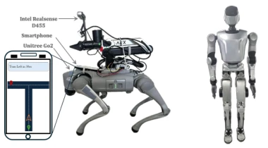
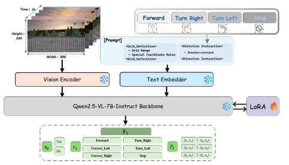
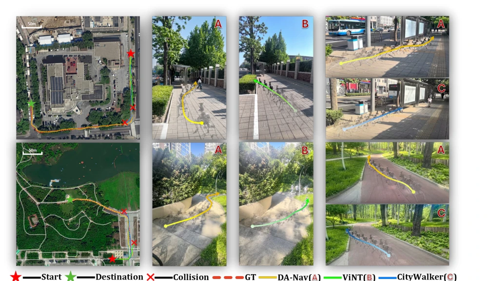
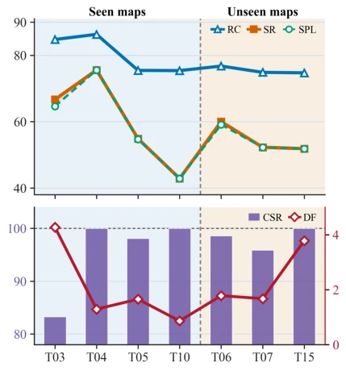
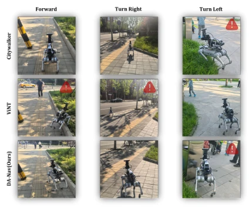
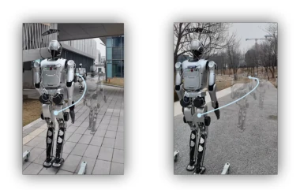

This DA-Nav attempts to command robots using coarse "phone navigation" instructions, rather than relying on expensive SLAM maps. The approach is ingenious, transforming continuous path regression into discrete grid grounding on the image plane, combined with CoT for trajectory recovery. It achieves good performance in CARLA, and the real robot can also navigate 1.2 kilometers. However, in essence, it still relies on phone navigation; what if GPS drifts or there is no signal? Moreover, VLM inference latency is high, and real robots still rely on remote GPUs; does this constitute a "cloud brain"? However, being able to transfer across robot platforms without fine-tuning is indeed commendable. Additionally, the construction of the ReDA dataset fills the gap in direction-aware data, but the premise of relying on commercial tools makes its application prospects in GPS-denied areas questionable. Overall, this is an interesting attempt to achieve robust navigation under sparse instructions; although it has not completely escaped external dependencies, it demonstrates the potential of VLMs in long-horizon closed-loop control.
Urban-level navigation is currently constrained by SLAM and dense maps, with high maintenance costs and susceptibility to dynamic environments [1], [2]. Existing VLN methods either rely on fine-grained language annotations [4], [5] or require dense navigation supervision, making them difficult to scale. Although commercial navigation tools (such as Google Maps) have mature path planning, the instructions are too coarse (e.g., "turn right in 50 meters ahead"), and robots cannot execute them directly. Furthermore, perception error accumulation in long-horizon navigation leads to path deviation, and existing methods lack robust recovery mechanisms [6], [9]. This paper aims to utilize direction instructions from commercial tools, combined with VLM's spatial grounding capabilities, to solve the problem of sparse instruction execution and trajectory recovery. Existing works such as CityWalker [9] and ViNT [6] perform adequately in simulation but are prone to failure due to accumulated errors in real complex scenarios and lack the ability to correct OOD states.

Fig. 6. Robotic platforms used for real-world deployment. Left: Unitree Go2 quadruped robot. Right: Leju Kuavo-V humanoid robot. Both plat- forms stream egocentric RGB observations and direction-aware instructions to a remote GPU server for policy inference.
The overall process reconstructs navigation as a discrete spatial grounding problem on the image plane. Inputs are ego-centric RGB sequences and commercial navigation direction instructions. The core model is based on Qwen2.5-VL-7B, fine-tuned via LoRA. Innovations include: 1) Discrete grid representation: discretizing future trajectories into grid sequences on the image plane, rather than 3D coordinates, reducing VLM spatial hallucinations. 2) CoT reasoning: forcing the model to first evaluate deviation (Yes/No), then predict actions (Forward/Turn), and finally output the target grid, enhancing decision consistency. 3) Trajectory recovery: injecting perturbed trajectories via the ReDA dataset to train the model's correction ability in OOD states. 4) Control interface: adopting Furthest-Point Control strategy for smooth control, combining depth/IPM hybrid projection to map grids to the body coordinate system. Specifically, the model first extracts features through a visual encoder, combines text instructions, and injects spatial grid constraints into the prompt. Subsequently, the model autoregressively generates a structured CoT sequence, including state evaluation, action selection, and trajectory prediction. Finally, the predicted pixel grids are converted into continuous trajectories under the body coordinate system via a hybrid projection strategy (depth or IPM), executed by the furthest-point controller, effectively suppressing high-frequency control fluctuations.

Fig. 2. Overview of the DA-Nav architecture. Multimodal inputs are processed by frozen encoders and passed to a LoRA-finetuned Qwen2.5- VL-7B backbone. The model autoregressively outputs a structured CoT decision sequence consisting of state assessment, corrective action, and discrete future trajectories on the image grid.
239 trajectories were tested in CARLA, comparing with baselines such as CityWalker [9], ViNT [6]. DA-Nav achieved an SR of 59.00% in unseen urban environments, with a Correction Success Rate (CSR) as high as 98.15%, significantly outperforming baselines (e.g., CityWalker CSR 30.73%). Ablation studies show that removing CoT causes SR to drop to 38.91%, and removing recovery data causes CSR to plummet to 15.46%, proving both are crucial for robustness. Real robot deployment on Unitree Go2 and Leju Kuavo-V achieved 1.2 kilometers closed-loop navigation without fine-tuning. However, in real complex scenarios, SR remains lower than simulation, mainly limited by GPS accuracy and communication latency. Additionally, in open-loop primitive tests, DA-Nav performed better than regression baselines in turning tasks, proving the geometric consistency advantage of discrete grounding.

Fig. 4. Real-world closed-loop navigation comparison. Satellite maps denote the start (red star), destination (green star), and reference path (red dashed line). Third-person views visualize the execution trajectories of DA-Nav (A, yellow), ViNT (B, green), and CityWalker (C, blue). Red crosses (×) indicate collisions during execution.

Fig. 5. Per-town evaluation of DA-Nav across seen and unseen environ- ments. Top: Standard navigation metrics (RC, SR, SPL) across different CARLA towns. Bottom: Relationship between deviation frequency (DF, red line) and correction success rate (CSR, purple bars).

Fig. 7. Real-world open-loop evaluation of navigation primitives (Forward, Turn Right, and Turn Left) across different methods. Red icons indicate failures or unsafe maneuvers. Compared with CityWalker and ViNT, DA- Nav demonstrates more stable execution and improved spatial grounding during large turning maneuvers.

Fig. 8. Zero-shot cross-embodiment deployment on the Leju Kuavo-V humanoid. The model achieves continuous closed-loop navigation over 1.2 km without real-world fine-tuning, exhibiting stable trajectory execution (blue curves) in both (Left) urban and (Right) park environments.